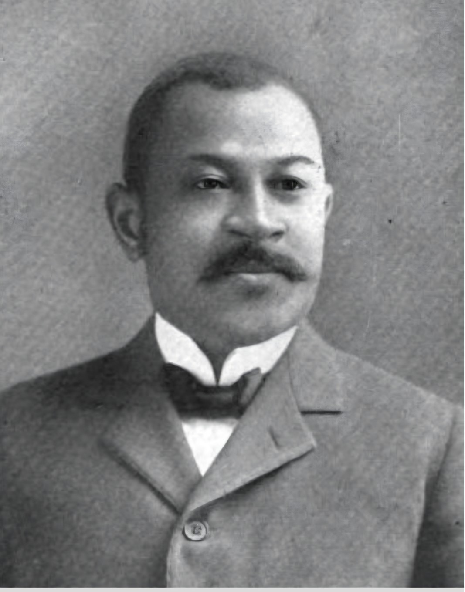

Recovering a History That Was Never Fully Recorded.
Launching September 1, 2026 — Henry Edwin Baker's 169th Birthday
— Henry E. Baker
HEBRI continues Henry Edwin Baker's pioneering work documenting Black inventors, patents, invention and innovation.
Discover HEBRI Explore Our Research
Research. Document. Verify. Preserve. Educate.
The Henry E. Baker Research Institute (HEBRI) is dedicated to researching, documenting, verifying and preserving the historical record of Henry Edwin Baker, Black inventors, patents, invention and innovation.
Our work combines archival research, patent records, historical publications, institutional collections and modern research technology to expand public understanding of Black contributions to American innovation.
Henry Edwin Baker
Henry Edwin Baker was a lawyer, U.S. Patent Office official and pioneering researcher who devoted decades to identifying and documenting African American inventors and patent holders at a time when federal patent records did not systematically identify inventors by race.
His research helped preserve a historical record that otherwise might have remained hidden and culminated in works including The Colored Inventor: A Record of Fifty Years (1913).
Explore Henry E. BakerResearch Initiatives
Henry E. Baker Papers Project
Locating, documenting and reconnecting Baker's correspondence, publications, research materials and archival record.
Baker 169 Project
A research and public-history initiative honoring Baker's 169th birthday and expanding awareness of his historical legacy.
Black Inventors & Innovations Research Database
Building an evidence-based research resource documenting Black inventors, patents, inventions and innovations.
Henry E. Baker Memorial Initiative
Preserving Baker's memory through historical research, public recognition and long-term memorial efforts.
The Colored Inventor
Named in honor of Henry E. Baker's landmark 1913 work, The Colored Inventor explores Black inventors, patents, innovation, science, engineering and the continuing recovery of the historical record.
Explore The Colored InventorDo You Have Historical Materials?
HEBRI welcomes contact from families, historians, archivists, librarians, universities, museums, collectors and researchers who may hold Henry E. Baker correspondence, photographs, publications, research notes, family records or materials concerning inventors Baker documented.
Contact HEBRI ResearchHenry E. Baker Research Institute
For interviews, research inquiries, media materials and press information:
press@hebri.org
718-344-7129